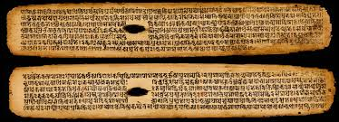
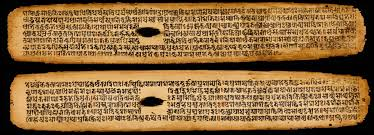

Introduction
Charaka, an ancient Indian physician, is considered the father of Ayurveda. His seminal work, the Charaka Samhita, forms the foundation of Ayurvedic medicine and provides a comprehensive understanding of health, disease, and treatment practices.
Historical Background
1st Century BCE
Charaka is believed to have lived and practiced medicine during this period.
Charaka Samhita
His most famous text, a compilation of medical knowledge and practices, was written.
Legacy
Charaka's teachings influenced not just Indian medicine but also ancient Greek and Roman practices.
Teachings and Manuscripts
Charaka emphasized the importance of balance in the body and mind. His manuscripts cover various topics, including anatomy, physiology, diagnosis, treatment, and ethics in medical practice. The Charaka Samhita is divided into eight sections, each focusing on a unique aspect of health and disease, such as general medicine (Kayachikitsa), pathology (Nidana), and pharmacology (Dravyaguna).
One of Charaka's notable teachings is the emphasis on prevention of disease through proper diet, lifestyle, and mental well-being. He highlighted the role of environmental factors, seasons, and individual constitution in health management.
The ethical principles outlined by Charaka, such as compassion, honesty, and diligence, remain relevant and inspiring for modern healthcare practitioners.
Visuals and Artifacts
 
